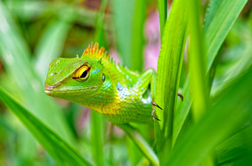
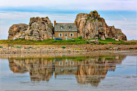
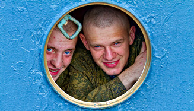
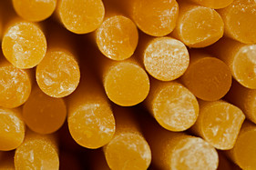
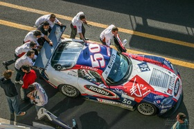

.jpg)
Insectes
Etincelle de la nature, minuscule architecte qui fait vibrer le monde à l'échelle de l'invisible … Plus
Etincelle de la nature, minuscule architecte qui fait vibrer le monde à l'échelle de l'invisible … Plus

Souffle mouvant des créatures, une symphonie d'ailes, de griffes et de pas qui habite le coeur vivant de la terre … Plus
.jpg)
Voix silencieuse de la terre, un chœur de racines, de tiges et de pétales qui tissent la mémoire vivante des saisons … Plus

Rencontre entre la terre, le ciel et le regard qui les contemple … Plus

Une collection de photographies de personnes de races et de cultures différentes à travers le monde … Plus
.jpg)
La lumière et l'ombre qui dialoguent, un silence visuel où chaque contraste révèle l'âme cachée des choses … Plus
Faire parler les formes et les couleurs, une écriture visuelle où les lignes deviennent langage et les images, émotions … Plus
Capturer la mémoire lumineuse des étoiles, un voyage figé dans l'infini où le ciel se laisse écrire en éclats d'éternité … Plus

Plongeon dans l'infiniment proche, où les détails minuscules s’éveillent et révèlent la grandeur secrète du monde … Plus

Super Série FFSA de 2005 sur le ciruit Bugatti du Mans se déroulant sur 3 jours (23, 24 et 25/09) … Plus
.jpg)
Ex "Hardeuse" américaine dans les années 80, c'est la diva du blues qui se produit au Vauban à Brest (26/01/2013) … Plus
.jpg)
Concert OK (pour son 2ème album, "Zero Killed") pour Hugh Coltman au Vauban à Brest (17/04/2013) … Plus